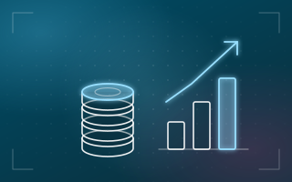

Fondos de Reserva en Ecuador: Quién los Recibe, Cuánto Son y Cómo se Pagan

Los fondos de reserva son uno de los beneficios de ley que más se confunden en la práctica: quién tiene derecho, desde cuándo, cuánto y por qué vía se pagan. Esta es la versión corta.
Calcula tu fondo de reserva
Ingresa tu remuneración y tu fecha de ingreso: te decimos cuánto generas y desde cuándo.
Cálculo referencial: 8,33 % de la remuneración aportable a partir del mes 13 de trabajo con el mismo empleador.
¿Qué son los fondos de reserva?
Es un beneficio que equivale a un mes de remuneración por cada año de servicio completo posterior al primero. Dividido en doce partes, se traduce en un 8,33 % de la remuneración de cada mes. Corresponde a los trabajadores en relación de dependencia afiliados al IESS.
¿Desde cuándo se generan?
Desde el mes 13 de relación laboral con el mismo empleador, es decir, una vez cumplido el primer año de servicio. Durante el primer año no se generan.
¿Cómo se calculan?
La base es la remuneración por la que el trabajador aporta al IESS: sueldo, comisiones, horas extra y demás ingresos regulares, no solo el sueldo básico.
Dos formas de recibirlos
- Mensualizados: el trabajador los recibe cada mes junto con su rol de pagos. Para eso debe solicitarlo por escrito al empleador.
- Acumulados en el IESS: si el trabajador no pide la mensualización, el empleador deposita el valor cada mes en el IESS junto con las aportaciones, y el trabajador los gestiona directamente con el instituto.
En ambos casos el valor se calcula igual; solo cambia el destino del pago. Conviene conservar la solicitud escrita de cada trabajador que elige la mensualización.
Errores comunes
- Empezar a pagarlos tarde, por no controlar las fechas de ingreso y no arrancar justo en el mes 13.
- Calcularlos solo sobre el sueldo básico, sin comisiones, horas extra ni otros ingresos regulares.
- Mensualizar sin solicitud escrita del trabajador, o no respetar la que ya existe.
- Depositar fuera de plazo en el IESS, lo que genera mora patronal con intereses.
- No separar a quienes mensualizan de quienes acumulan en el IESS al armar el rol y la planilla.
Cómo un software de nómina evita estos errores
En el módulo de Nómina de SquareNet cada rubro es una fórmula editable: el fondo de reserva se configura una vez (8,33 % desde el mes 13 de cada empleado, mensualizado o acumulado) y se calcula solo en cada rol. Como toma las mismas bases que el resto de los ingresos, las comisiones y las horas extra entran automáticamente en el cálculo, y el sistema emite los archivos batch para el IESS (avisos de entrada, salida, modificación de sueldo y variación por extras).
Esta guía es informativa y se basa en las disposiciones vigentes al momento de su publicación. Verifique siempre porcentajes, plazos y procedimientos con el IESS y el Ministerio del Trabajo antes de procesar su nómina.